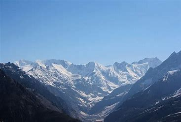
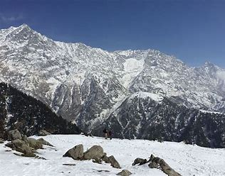

The Pir Panjal Range is situated principally in the disputed Kashmir region. It extends southeastward for more than 200 miles (320 km) from the Nilam (Kishanganga) River in the western Azad Kashmir area (administered by Pakistan), through southwestern Jammu and Kashmir union territory (administered by India), to the upper Beas River in northwestern Himachal Pradesh state, India. Rising sharply to an average elevation of more than 13,000 feet (4,000 metres), it separates the Jammu Hills to the south from the Vale of Kashmir, beyond which lie the Great Himalayas. The major passes through the range include the Pir Panjal (11,462 feet [3,494 metres]) and Banihal (8,985 feet [2,739 metres]). A highway tunnel near Banihal Pass makes the Vale of Kashmir accessible to traffic from the south, even in winter. The mountains extending to the north of the Nilam River in Pakistan are sometimes considered part of the range.
Pir Panjal Range

| Pir Panjal Range | |
|---|---|
|  | |
| Highest Peak | |
| Peak | Manimahesh Kailash Peak |
| Prominence (m) | 408m/1 339ft |
| Elevation | 5,653 metres |
| Coordinates | 32°24′06″N 76°40′09″E |
| Geography | |
| Countries | India |
| Borders on | Himachal Pradesh, Jammu and Kashmir |